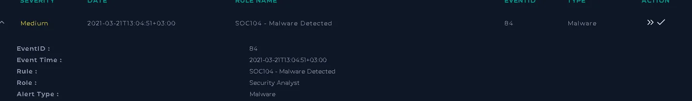
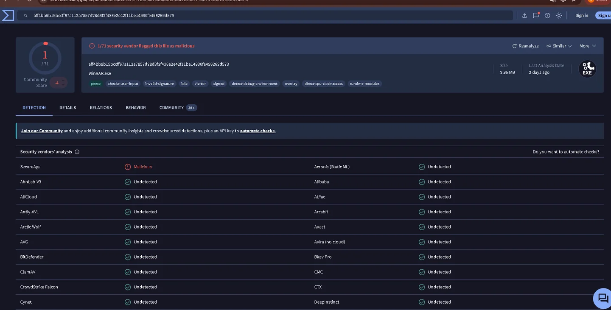
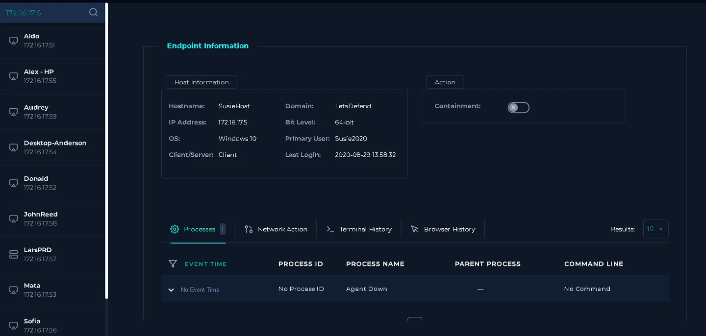
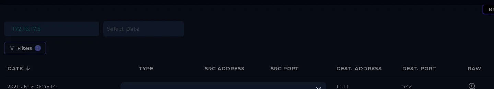
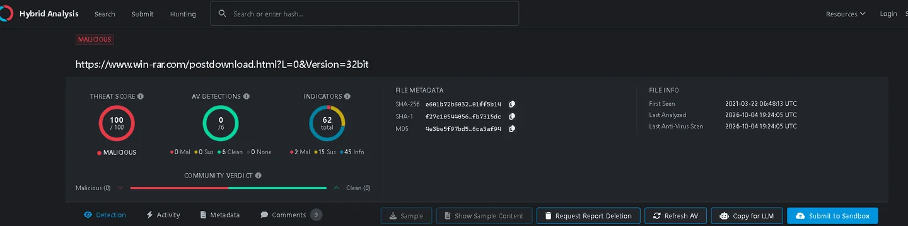
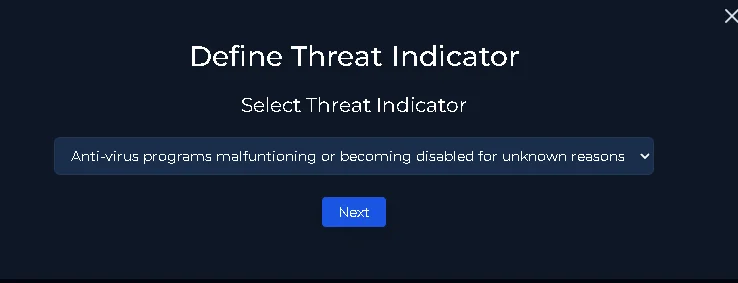
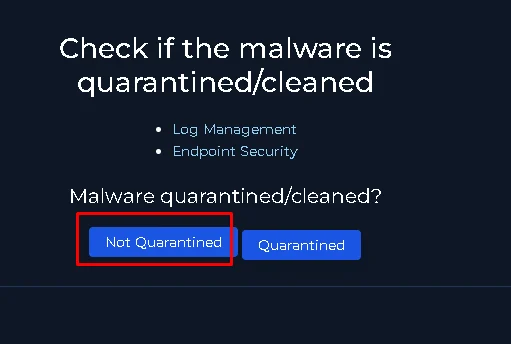
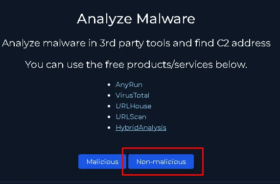

SOC104 · Malware Detected: evento 84
- Categoria
- Malware
- Caso
- SOC104-84
- Registro
- Falso positivo
Resumo
Triagem de outro alerta da regra SOC104, relacionado ao download de um instalador do WinRAR.
Passo a passo da investigação
Abertura do chamado
O primeiro passo foi abrir um chamado.

Análise do hash
Analisamos o hash c74862e16bcc2b0e02cadb7ab14e3cd6 no
VirusTotal. Na análise inicial, o resultado levantou suspeita sobre o
arquivo.

Verificação do host
Verificamos no Endpoint Security o host associado ao IP
172[.]16[.]17[.]5. A análise não identificou ações
suspeitas no computador.

Análise dos registros e da URL
Nos registros, encontramos a URL de download site oficial do WinRAR.

A análise inicial da URL no Hybrid Analysis levantou suspeita. Na revisão final, porém, a URL foi identificada como uma página do site oficial do WinRAR e não apresentou indícios de atividade maliciosa.

Conclusão
O hash c74862e16bcc2b0e02cadb7ab14e3cd6, referente ao
arquivo winrar600.exe, foi analisado no Hybrid Analysis e
no VirusTotal. A classificação final registrada foi não
malicioso. Pendente: informar a quantidade de
detecções e eventuais divergências entre as ferramentas. Os registros
mostram que o processo chrome.exe, no host
SusieHost (172[.]16[.]17[.]5), acessou a
URL do site oficial do WinRAR. A ação foi permitida, o que indica o
download do instalador. Não foi possível confirmar a execução do arquivo
porque o agente do EDR estava inoperante. Classificação
final: False Positive.
Evidências



Exercício simulado. Algumas capturas foram recortadas ou tiveram campos ocultados.